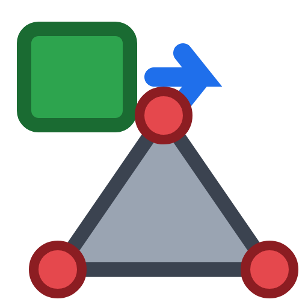
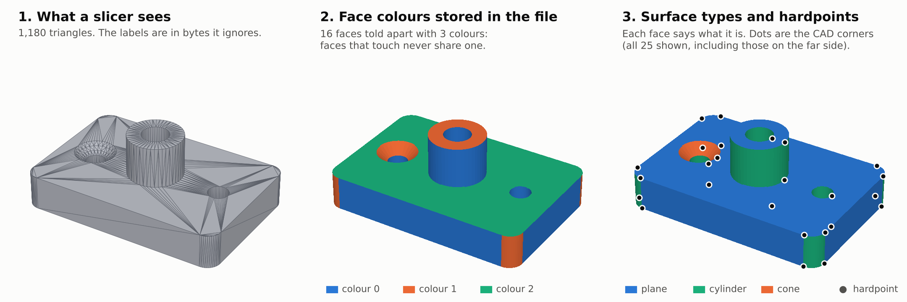
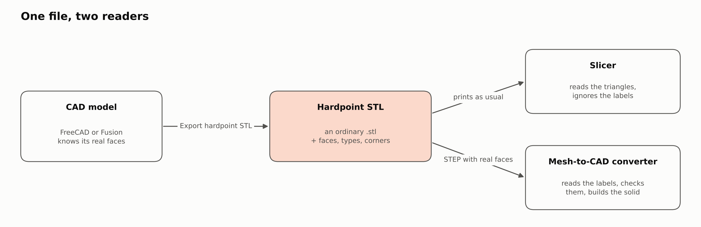
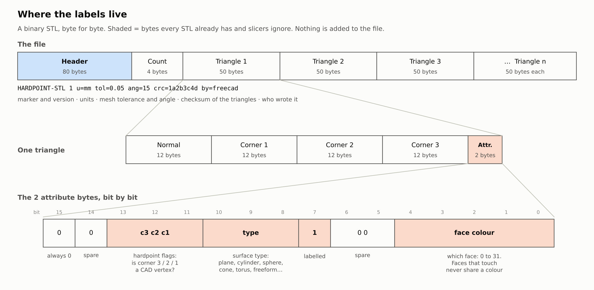
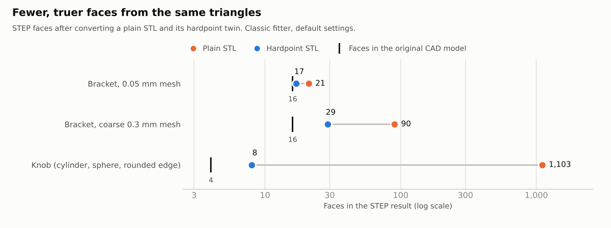

An ordinary binary STL that also remembers which CAD face each triangle came from, what kind of surface it is, and where the corners are. Slicers read a normal STL; a converter that knows the format can rebuild the solid without guessing.
DownloadSource on GitHub
Same triangles, same file size, same .stl extension. The labels sit only in the header and the 2 spare bytes after each triangle, which slicers skip.
A workbench and an add-in that export Export hardpoint STL straight from your solids. A double-click installer puts them in place.
How slicers read STL, why the format looks like this, measurements, what failed, and a list of open work, for anyone who wants to take it further.


Measured with STL2STEP, a separate mesh-to-STEP converter (not part of this project): fewer, more correct faces from the same triangles.

| Item | Status |
|---|---|
| FreeCAD and Fusion exporters | Written, tested only against stand-ins. Never run in the real programs. |
| Real slicers | Not tried. Checked against the loaders they use, not the programs. |
| A converter in this repository | No. The format is developed with STL2STEP, which is separate. |
| STEP to hardpoint STL, a viewer, other CAD programs | Not written. |
| Windows and macOS | Not tested. |
Hardpoint-STL-Linux.sh, Hardpoint-STL-Mac.command or Hardpoint-STL-Windows.bat (needs Python 3).Or read the format in the repository: HARDPOINT_STL.md and DESIGN_NOTES.md.